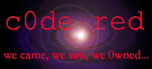

- This security system has been rooted by -
CyRaX
Other -c0de red- members :
ch0jin - r0swell - ze0
c0de red is our name, brutality is our trademark...
you don't need eyes to see, you need vision
- shoutz fly out to -
hackernews.com
attrition
#belgiumwing
#hackers
- in memory of the great -
|LLus|0{\}
Cheitan